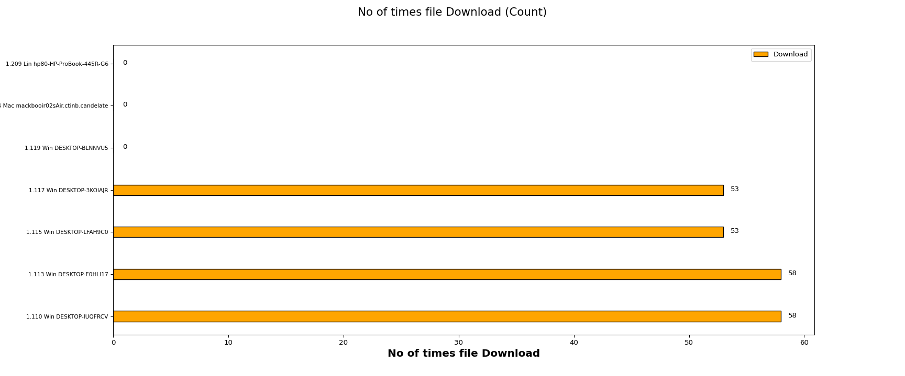
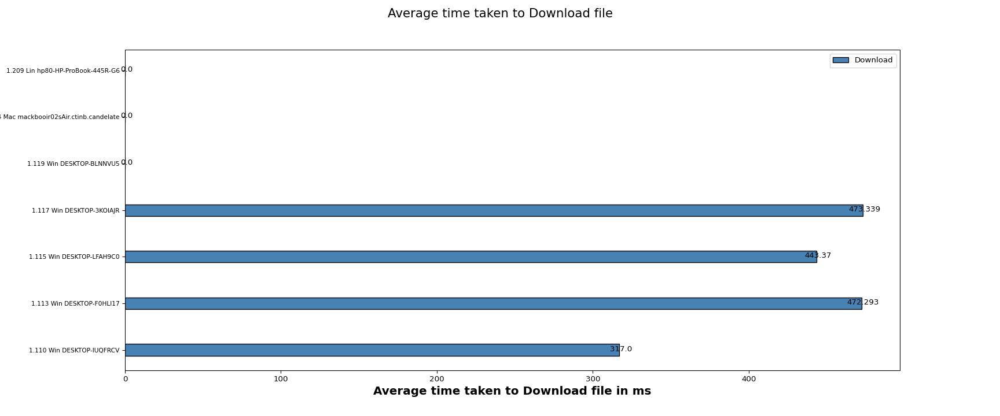

| s/no | test_name | Duration | status |
|---|
| Test Setup Information |
|
||||||||||||||||||||||||||||||||||||||||
The below graph represents number of times a file Download for each client(WiFi) traffic. X- axis shows “No of times file Download” and Y-axis shows Client names.

The below graph represents average time taken to Download for each client (WiFi) traffic. X- axis shows “Average time taken to Download a file ” and Y-axis shows Client names.

The below table will provide information of minimum, maximum and the average time taken by clients to download a file in seconds
| Minimum | Maximum | Average |
|---|---|---|
| 0.0 | 1.0 | 0.2 |
| Clients | MAC | Channel | SSID | Mode | No of times File downloaded | Time Taken to Download file (ms) | Bytes-rd (Mega Bytes) | RX RATE (Mbps) | Failed Urls |
|---|---|---|---|---|---|---|---|---|---|
| 1.110 Win DESKTOP-IUQFRCV | 24:ee:9a:39:2e:6 | 0 | AUTO 20 | 58 | 317.000 | 290.0000 | 38.7123 | 0 | |
| 1.113 Win DESKTOP-F0HLI17 | 00:bb:60:0b:5a:fe | 36 | OpenWifi_psk2 | 802.11abgn-AC 20 1x1 | 58 | 472.293 | 293.9409 | 38.7029 | 0 |
| 1.115 Win DESKTOP-LFAH9C0 | 34:f3:9a:eb:46:b4 | 36 | OpenWifi_psk2 | 802.11abgn-AC 20 1x1 | 53 | 443.370 | 265.0000 | 37.8978 | 1 |
| 1.117 Win DESKTOP-3KOIAJR | f4:8c:50:e2:01:6 | 36 | OpenWifi_psk2 | 802.11abgn-AC 20 1x1 | 53 | 473.339 | 265.0000 | 37.4618 | 0 |
| 1.119 Win DESKTOP-BLNNVU5 | 34:41:5d:51:d1:96 | 36 | OpenWifi_psk2 | 802.11abgn-AC 20 1x1 | 0 | 0.000 | 0.0000 | 0.0000 | 0 |
| 1.154 Mac mackbooir02sAir.ctinb.candelate | 8:bf:6b:d4:60:5a | 36 | OpenWifi_psk2 | 802.11abg 80 2x2 | 0 | 0.000 | 0.0000 | 0.0000 | 0 |
| 1.209 Lin hp80-HP-ProBook-445R-G6 | 8:cd:c4:de:d3:bb | 36 | OpenWifi_psk2 | 802.11an-AC 80 2x2 | 0 | 0.000 | 0.0000 | 0.0000 | 0 |